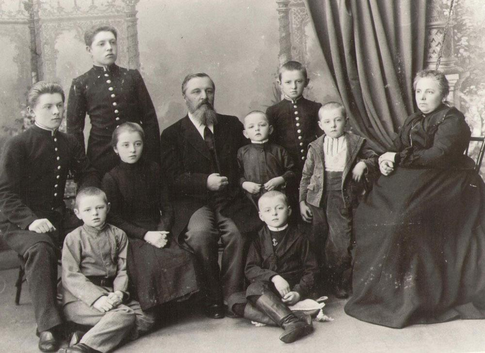

Об Авторе
Детство и Юность
30 октября (11 ноября) 1821 года в московской Мариинской больнице у лекаря Михаила Андреевича Достоевского
и его супруги Марии Фёдоровны родился сын Фёдор.
Отец мальчика был человеком глубоко религиозным,
учился в духовной семинарии, а затем поступил в
московское отделение Императорской медико-хирургической
академии и стал врачом. В 1812 году служил в военном
госпитале, а после женитьбы перешёл на работу в Мариинскую
больницу. В 1827 году Михаил Андреевич дослужился до чина
коллежского асессора и получил
потомственное дворянство.

В семье Достоевского было семеро детей. Вопреки тогдашним обычаям, детей никогда не били и вообще не наказывали жестоко, хотя отец их был человеком вспыльчивым и гневливым. С малых лет семья Достоевских прививала своим детям любовь к русской литературе и культуре.
Детство Фёдора Достоевского прошло в Москве, а также в усадьбе Даровое – небогатом имении под Каширой, которое семья смогла приобрести, вступив в дворянское сословие. До 13-летнего возраста Фёдор, учился дома. Приходящие педагоги занимались со старшими детьми русским и французским языками, литературой, математикой, а латыни их учил отец. В 1834 году Фёдор и его старший брат Михаил поступили в пансион Леонтия Чермака. Огромное влияние на юного Фёдора оказал учитель русского языка Н.И. Билевич. Благодаря ему Достоевский впервые начал задумываться о своём писательском призвании.
В 1837 году после тяжёлой болезни умерла мать Достоевского. Отца не стало два года спустя – он скончался не то от апоплексического удара, не то от рук собственных крестьян.
После смерти матери братья Михаил и Фёдор отправились в столицу, чтобы готовиться к поступлению в Инженерное училище. Фёдора в 1838 году в училище приняли, а Михаила – нет, и братьям пришлось расстаться. Фёдор в 1843 году окончил училище и даже поступил в столичную инженерную команду, однако вскоре бросил военную службу и решил целиком посвятить себя русской словесности.
Начало писательской деятельности
Юношеские литературные опыты, о которых Фёдор Достоевский писал своему брату, не сохранились, однако ясно, что первые произведения Достоевский начал писать ещё во время учёбы в Инженерном училище. После выхода в отставку Достоевский занимался переводами, а в 1845 году завершил свой первый роман «Бедные люди», получивший успех у публики. Достоевский присоединился к кружку В.Г. Белинского, постепенно обрастая литературными знакомствами.
Впрочем, все соратники Белинского, да и сам знаменитый критик, не сумели оценить второе произведение начинающего писателя – повесть «Двойник». Достоевский рассорился и с Белинским, и с Некрасовым, и с Тургеневым и покинул общество редакции «Современника». С 1846 года он публиковался в «Отечественных записках» и продолжал расширять круг своих литературных связей – познакомился с И.А. Гончаровым, присоединился к литературно-философскому кружку Бекетовых и Майковых.
Арест и ссылка
В 1846 году он познакомился с М.В. Петрашевским, объединившим вокруг себя революционно настроенную молодёжь. В обществе петрашевцев распространялись опальные тексты и обсуждались идеи государственного переворота. В 1849 году деятельность кружка была раскрыта, его участники арестованы, в их числе и Фёдор Достоевский, признанный одним из опаснейших преступников. Как и другие петрашевцы, он провёл 8 месяцев в одиночной камере Петропавловской крепости, а затем выдержал процедуру смертной казни, которую отменили в последний момент.
В 1862 и 1863 гг. писатель на лето уезжал в Европу, где не только проходил курортное лечение, но и пристрастился к игре в рулетку. После очередного разорительного проигрыша он, наконец, избавился от игромании. Впечатления этого периода, нашли отражение в его творчестве – в сюжете романа «Игрок». Фёдор Михайлович посетил Германию, Францию, Англию, Швейцарию, Италию и Австрию, однако, в отличие от многих своих соотечественников, не влюбился в Европу и не принял распространённых на западе либерально-буржуазных ценностей и идей.
Расцвет творчества
С 1861 года Фёдор Михайлович вместе со старшим братом Михаилом издавал литературные журналы: сначала «Время», затем «Эпоха». На их страницах, разумеется, появлялись и произведения писателя. Опубликованные в 1861–1862 гг. «Записки из Мёртвого дома» потрясли современников и вернули Достоевскому былую литературную славу.
В 1862 и 1863 гг. писатель на лето уезжал в Европу, где не только проходил курортное лечение, но и пристрастился к игре в рулетку. После очередного разорительного проигрыша он, наконец, избавился от игромании. Впечатления этого периода, нашли отражение в его творчестве – в сюжете романа «Игрок». Фёдор Михайлович посетил Германию, Францию, Англию, Швейцарию, Италию и Австрию, однако, в отличие от многих своих соотечественников, не влюбился в Европу и не принял распространённых на западе либерально-буржуазных ценностей и идей.
В 1864 году скончался старший брат писателя и его издатель Михаил Михайлович, и на плечи Фёдора Михайловича легли все долги журнала. Спустя год «Эпоху» пришлось закрыть, а писатель, остро нуждавшийся в деньгах, согласился на кабальные условия издателей и был вынужден писать много и быстро. В условиях жесточайшей нехватки времени, под страхом нищеты он создал романы «Преступление и наказание» и «Игрок» – последний писатель надиктовал за рекордные 26 дней. Достоевский не справился бы с такой задачей в одиночку: ему помогала одна из лучших стенографисток столицы Анна Григорьевна Сниткина, ставшая впоследствии супругой писателя.
В 1867 году Достоевский бежал от кредиторов за границу и некоторое время жил в Швейцарии, Италии и Германии. Там он работал над такими романами, как «Идиот» и «Бесы». Вернуться на родину писатель смог только в 1871 году. В России Достоевский завершил работу над «Бесами», а затем издал ещё два романа – «Подросток» и «Братья Карамазовы». Не оставлял Достоевский и публицистическую деятельность.
Семья и личная жизнь Фёдора Достоевского
Свою первую жену Марию Дмитриевну Исаеву Фёдор Михайлович встретил в 1854 году в Сибири. Они познакомились в Семипалатинске, где Достоевский служил после отбытия каторжного срока, и обвенчались в 1857 году. В союзе, который не стал счастливым, детей у Достоевского не было, однако он внимательно заботился о пасынке Павле, ребёнке Марии от первого брака. Мария Дмитриевна скончалась в 1864 году.
Второй супругой писателя стала Анна Григорьевна Сниткина, помогавшая ему стенографировать рукописи. С ней Достоевский обвенчался в 1867 году. Несмотря на 20-летний возраст, Анна Григорьевна прочно взяла в свои руки хозяйство и финансы мужа, помогла ему выбраться из долговой ямы, а после смерти Достоевского собирала документы, рукописи, письма знаменитого романиста, готовила их к публикации. От брака с Анной Григорьевной у Достоевского родились четверо детей, двое из которых умерли в раннем возрасте. До зрелых лет дожили дочь Любовь Фёдоровна, как и отец, посвятившая жизнь литературному творчеству, и сын Фёдор Фёдорович.
Смерть
Фёдор Михайлович Достоевский страдал от эпилепсии, первый приступ которой произошёл с ним, вероятно, ещё в подростковом возрасте, а медицинское подтверждение болезнь получила в годы заключения. Припадки эпилепсии, преследовали писателя на протяжении всей его жизни и даже нашли отражение в литературном творчестве – той же болезнью страдал главный герой романа «Идиот» князь Мышкин. Однако причиной смерти писателя стала не эпилепсия, а туберкулёз, осложнённый хроническим бронхитом и эмфиземой лёгких.
Ухудшение своего состояния Достоевский почувствовал накануне наступления 1881 года. В январе, как вспоминали его родные, после ссоры с сестрой из-за имущественных дел у писателя пошла горлом кровь, он слёг. Смерть Достоевского наступила пару дней спустя, 28 января 1881 года. Похороны классика литературы собрали огромное количество народа, очередь из желающих проститься с ним растянулась на километр. Местом упокоения Достоевского стало Тихвинское кладбище Александро-Невской лавры в Санкт-Петербурге.